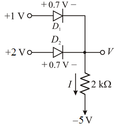
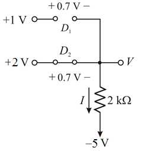
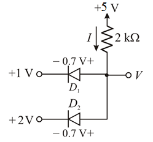
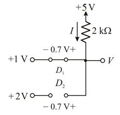

The value of the current that flows through the resistance,  is
is
Therefore, the value of the current that flows through the resistance is .
(a)
Refer to Figure P4.3(a) in the text book.
Redraw the circuit diagram as shown in Figure 1.

Figure 1
From the diagram given above, the top diode is cut off, whereas the bottom diode is in the conducting mode.
The resultant circuit is shown in Figure 2.

Figure 2
Apply Kirchhoff’s voltage law.
The output voltage is,
Therefore, the value of voltage V is .
The value of the current that flows through the resistance, is
Therefore, the value of the current that flows through the resistance is .
(b)
Refer to Figure P4.3(b) in the text book.
Redraw the circuit diagram as shown in Figure 3.

Figure 3

Figure 4
Apply Kirchhoff’s voltage law to the circuit.
Therefore, the value of voltage V is .
The value of the current that flows through the resistance, , is
Therefore, the value of the current that flows through the resistance is .